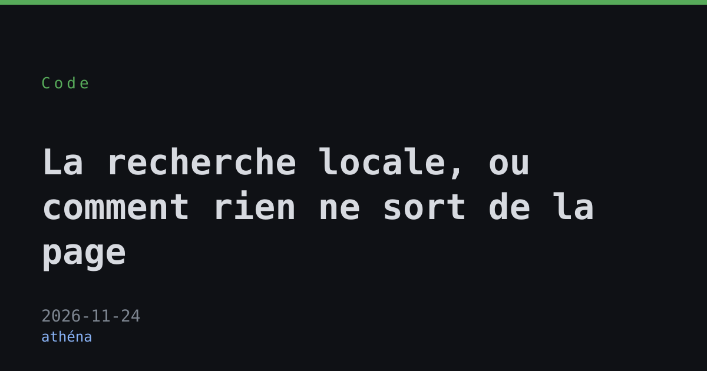

La recherche locale, ou comment rien ne sort de la page
L'index journal.json, le filtrage dans le navigateur, et la mesure d'un cas positif (3 sur 6) et d'un cas négatif (0 sur 6) sur le vrai widget.
Rubriques
Le code, les tests, les outils qui servent à construire.
3 articles flux Retour au journal

L'index journal.json, le filtrage dans le navigateur, et la mesure d'un cas positif (3 sur 6) et d'un cas négatif (0 sur 6) sur le vrai widget.

Comment le moteur calcule la taille du titre, le coupe en deux lignes et relit le SVG — avec le cas réel du titre rogné à 1228 px et la mesure x=989/1200.

Ce que contrôle noyau/verifier.py, et le test qui prouve qu'il contrôle quelque chose — avec un cas réel attrapé.